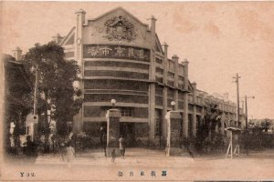
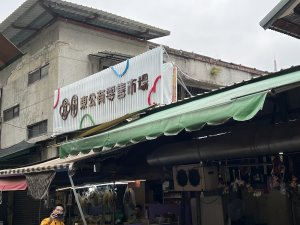
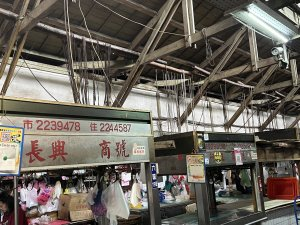
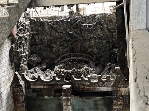
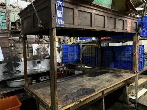

東市場歷史 東市場是住在山裡面的農民們，把山上蔬果運下山後第一個市集，故又別稱「草市」。清領時期，諸羅城內縣衙府的官員、家眷，還有到城隍廟拜拜的香客，聚集了大量人潮，慢慢形成一個臨時市集。 日治時期重新整頓東市場，於大正3年（西元1914年）正式啟用營業，至今已有百年歷史。建築採用大量檜木材料且挑高，歷經多次火災、地震與戰亂損毀，於1987年有局部水泥現代化增建；但是就市場建築而言，仍然是嘉義市僅存最古老風味與保有傳統氣息的大市場。老一輩的嘉義人對於東市場的叫賣聲與人潮碰觸、喊價、殺價、挑選、問候…都有相當的印象與記憶。
|
 | |
東市場特色 東市場就像是嘉義人的大廚房，市場內外提供在地人的生活必需品，從平日的蔬果魚肉、結婚嫁娶的禮品，到祭祀神明的糕點、用具，在東市場一應具全。除了生活必需品，東市場更是嘉義人的大食堂，裡頭充滿歷史悠久的經典美食，如米糕、牛雜湯、楊桃汁、排骨酥、春捲等等，都是在地人和遊客進入市場後必嚐的美食。 東市場周遭就是城隍廟、嘉義市第一古廟雙忠廟（元帥廟）、鎮南聖神宮（文昌祠）、紅毛井（蘭井）等景點，保存了難得的舊城區景態特色。因此市府或民間單位舉辦古蹟之旅時，東市場都是重要的導覽與教育的場域。 位置：嘉義市東區忠孝路與中正路口 |
 | |
| 嘉義東市場內部 | ||
|  |  |  |
| 資料來源：嘉義市政府 | ||